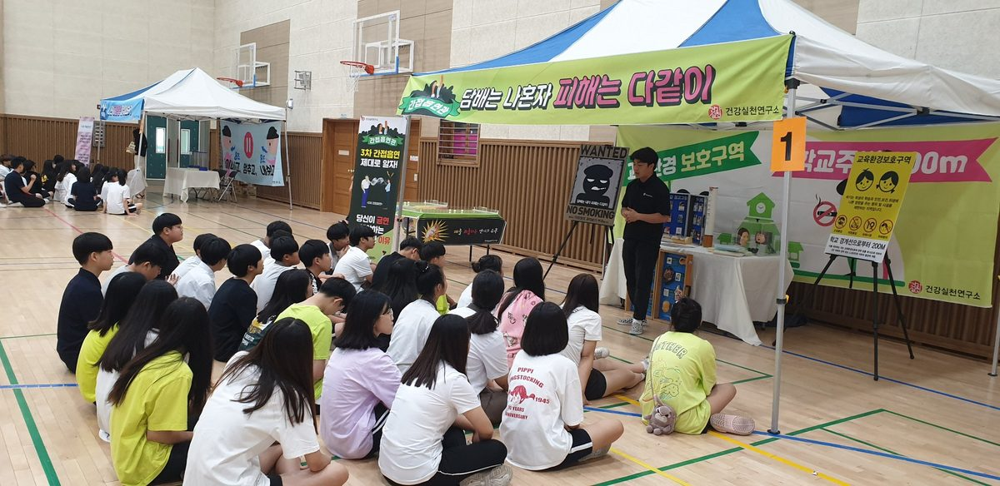

Education Ministry · 교육 사역
청소년 교육 사역찾아가서, 보여 주고, 함께 해 봅니다
학교 체육관에 부스를 세우고, 교실과 강연장으로 들어갑니다. 흡연과 음주가 몸에 무엇을 남기는지 전시와 자료로 보여 주고, 성교육과 성인지 감수성은 아이들 눈높이의 언어로 풀어 줍니다. 심폐소생술은 학생 손으로 직접 눌러 보게 합니다. 듣기만 하는 교육이 아니라, 눈으로 보고 몸으로 익히는 교육을 지향합니다.
- 현장체육관 부스·교실·강연장
- 주제흡연·음주·약물 예방, 성교육
- 실습심폐소생술·응급처치

현장에서 진행한 교육
아래 주제는 받은 교육 현장 사진에서 확인되는 내용만 정리했습니다. 학교 일정과 학년, 인원에 맞춰 주제와 시간을 조정합니다.
-
흡연·약물 예방
담배와 약물, 자료로 보여 주기
전시관과 강연장에서 담배가 몸에 남기는 피해를 보여 줍니다. 전자담배 미세먼지, 연초와 전자담배의 비교, 청소년 흡연율 추이 같은 슬라이드로 설명하고, 방송 중계실에서 특강을 중계하기도 합니다.
체육관에서는 금연관·금주관 전시로, 강연장에서는 슬라이드와 그래프로 — 같은 주제를 장소와 학년에 맞게 다르게 풀어 갑니다.
-
성교육
성(性)교육 · 성인지 감수성
‘청소년 성(性)교육’을 주제로 성폭력·성희롱·성매매 예방, 피임과 성범죄 인지 능력, 건강한 인간관계, 성인지 감수성을 차례로 다룹니다. 강당과 교실에서 학년 전체를 대상으로 진행합니다.
-
응급처치
심폐소생술 3고
‘깨우고, 알리고, 누르고’ 세 단계로 심폐소생술을 배우는 안전관입니다. 학생들이 바닥에 둘러앉아 마네킹과 강사의 시범을 보며 순서를 익힙니다.
-
부스·체험
금연관 · 금주관 · 전시관
체육관에 금연관과 금주관, 전시관 부스를 세웁니다. 그림과 모형, 전시물, 퀴즈 돌림판을 두고 부스마다 강사가 붙어 학생들이 앉은 자리에서 설명하고 질문을 받습니다.
-
교실·강연
학급 수업과 수료
교실과 도서관 강연장에서 학급 단위 수업을 진행합니다. 수업을 마치면 수료증을 나누고, 아이들과 단체사진을 남깁니다.
교육 현장 사진 17장
체육관 부스와 교실, 강연장, 방송 중계실에서 진행한 교육 사진입니다. 사진을 누르면 크게 볼 수 있고, 크게 본 사진은 좌우 화살표나 화면 넘기기로 이어서 볼 수 있습니다.
사진은 학교 교육 현장에서 촬영한 실제 사진입니다. 학생 얼굴이 그대로 나오는 사진이 있으므로, 다른 곳에서 쓰실 때는 초상권 확인을 먼저 해 주세요.
교육 문의
학교·교회·기관에서 흡연·음주·약물 예방교육, 성교육, 심폐소생술 교육, 교실 수업을 요청하실 수 있습니다. 대상 학년과 인원, 시간을 알려 주시면 그에 맞춰 내용을 조정합니다.